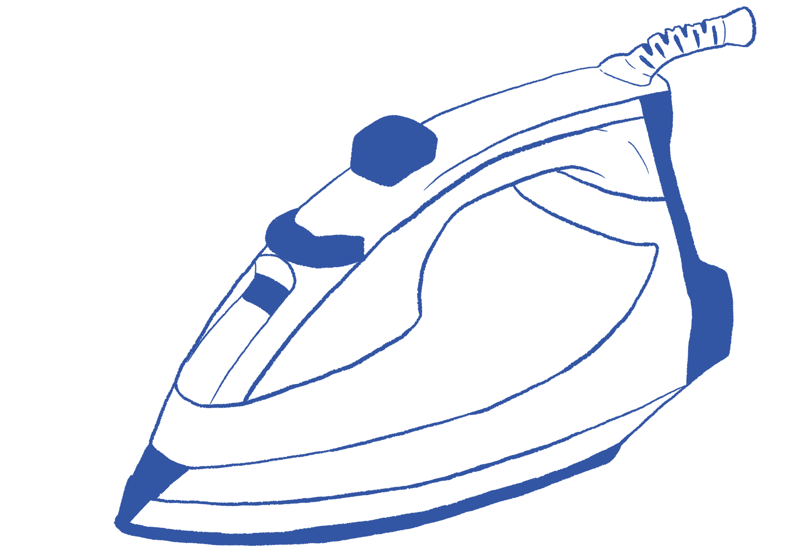

TIME NEEDED
1 hour
DIFFICULTY

MATERIALS
Iron
Straight pins

Hem
Hemming is a fundamental sewing skill which allows you to adjust the length of your garment and is a great way to hide/repair frayed edges. The same stitch can be applied to many different clothing items such as a pair of pants, the length of a dress, torn hems, sleeves, etc. Hemming is a simple stitch that ensures your clothes fit perfectly and look polished.

INSTRUCTIONS
1. Using a ruler measure from the existing hemline how much to hem and mark on both sides of the fabric, connect the two marks to make a straight line. You can cut excess fabric if needed.
2. Fold the edge of the fabric up to the marked hemline, fold inwards putting the inside fabric together.
3. Press this fold with an iron to create a crisp edge and your new hemline.
4. Secure the folded hem in place with pins, this helps create a straight stitch and prevents the fabric from moving around.
5. Using a straight stitch, sew along the folded edge at the end of the fabric keeping the stitches even and maintaining a consistent distance from the edge.
6. Once the hem is sewn, press it again to set the hem and create a smooth crisp line.